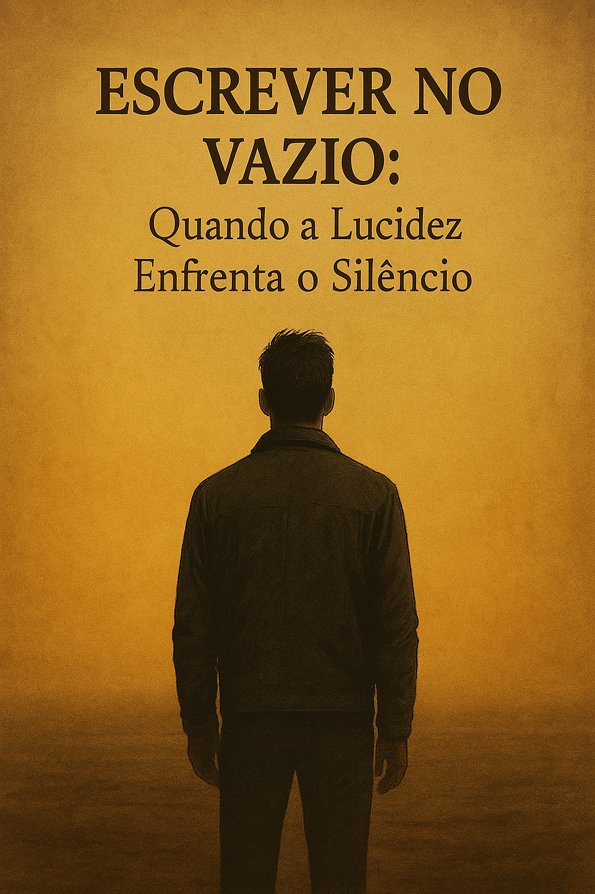

Publicado em 2025-05-23 20:28:33
 por Francisco Gonçalves Durante anos, escrevo. Denuncio, reflito, proponho, ilumino. Mas do outro lado... o vazio. Artigos lidos por dezenas, quando muito. Comentários? Nenhum. Nem um eco, nem uma crítica, nem sequer uma indignação. A verdade é dura: o povo parece não querer ouvir. Parece preferir a dormência à lucidez. Como se pensar fosse crime. Como se questionar fosse ofensa. Mas não me calo. Não escrevo por aplauso. Escrevo por urgência. Por ética. Por esperança. Por teimosia lúcida. Este povo — o meu povo — foi treinado para obedecer, não para pensar. Mas mesmo que me leiam poucos, continuo. Mesmo que não comentem, continuo. Mesmo que não vejam, continuo. Porque sei que algures há quem leia em silêncio. Sei que há quem acorde devagar. E sei que, um dia, as palavras que hoje não ouviram serão as sementes do que ainda pode ser. Não escrevo para todos. Escrevo para os que ainda não desistiram. Escrevo para mim. E escrevo para o futuro.